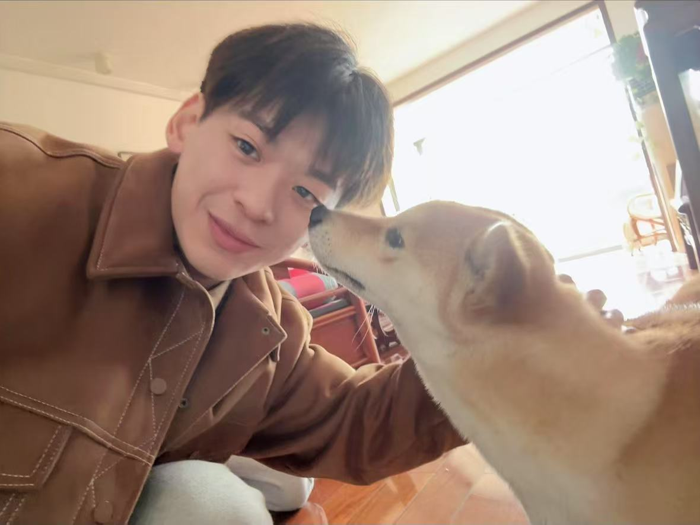

⟨ψ|
QML Theory
Expressivity bounds via covering numbers, effective dimension, and active subspaces of PQCs. Generalisation derivations under Lie-algebraic parameterisations.

PhD Researcher at UCL working with Prof. Peter V. Coveney, specialising in Quantum Machine Learning and hybrid quantum–classical AI. I focus on developing algorithms that bridge the gap between the NISQ and FTQC eras to achieve practical quantum advantage. Passionate about translating deep-tech research into scalable solutions that drive the commercialisation of quantum technologies.
I work across the theoretical and experimental sides of quantum computing, and I am equally interested in both. On the theory side, my focus is the expressivity and generalisation of quantum machine learning models: covering-number arguments, effective dimension and active subspaces of parameterised quantum circuits, and the Fisher-information / gradient-covariance geometry induced by Lie-algebraic parameterisations. I also work on the information-theoretic side of QML. Recent work of mine proves a two-stage practical quantum advantage for Quantum-Informed Machine Learning, using Bell-type joint-copy measurements to extract post hoc Pauli statistics with copy complexity independent of qubit count, against an Ω(2kq) lower bound for any adaptive single-copy protocol.
On the experimental side, I have run hardware experiments on both superconducting processors (most recently IQM-Garnet) and photonic quantum devices. The work centres on parameter-efficient circuits, careful encoding schemes, and measurement protocols that survive realistic noise on near-term hardware.
Before UCL I did my BSc and MSc at Wuhan University (武汉大学), and before that I went to Changsha No.1 High School (长沙市第一中学). Outside of research I take long walks, take care of a Shiba Inu, and read more physics history than is good for me.
Expressivity bounds via covering numbers, effective dimension, and active subspaces of PQCs. Generalisation derivations under Lie-algebraic parameterisations.
I run experiments on superconducting (IQM-Garnet) and photonic devices. The focus is shallow circuits, careful encoding, and Bell-type measurement protocols that hold up under realistic hardware noise.
Quantum priors as a structural regulariser for chaotic systems such as Kuramoto–Sivashinsky and 2D Kolmogorov flow, with weather-scale forecasting as the long-term target.
* denotes corresponding author · † equal contribution. Full list on Google Scholar.
Manuscript · 2026 · UCL · NVIDIA · LRZ
Science Advances, 12(16), eaec5049 · 2026
arXiv:2512.11071 · 2025
Proc. ICMAI · 2020
My PhD work, “Towards Practical Advantage with Quantum Machine Learning,” is organised around three threads. 2nd-Year Review poster (PDF) →
A hybrid quantum–classical framework for long-horizon prediction of chaotic dynamics. A small quantum generator (the Q-Prior) is trained on the IQM-Garnet superconducting chip and paired with a transformer-based classical predictor. Validated on Kuramoto–Sivashinsky, 2D Kolmogorov flow, and turbulent channel flows; achieves stable forecasts and a ~103:1 memory advantage over raw datasets. Published in Science Advances (2026), in collaboration with NVIDIA, IQM, and LRZ.
A quantum anomaly-detection framework optimised for shallow circuits and few measurements, deployed on real superconducting hardware and benchmarked on photonic devices. Combines amplitude encoding with a deep one-class objective to beat classical baselines in the small-sample regime. Published in Physical Review Research (2025).
A theory paper formalising a practical quantum advantage mechanism for QIML on chaotic systems. We extend the single-site Q-Prior to a k-indexed family of higher-order quantum statistical priors on nq = kq qubits, and prove a two-stage advantage: (i) representation, where entanglement compactly stores non-factorisable spatial correlations of the invariant measure; and (ii) extraction, where Bell measurements on two copies estimate any post hoc Pauli statistic with copy complexity independent of nq, while adaptive single-copy protocols require Ω(2kq) copies. The mechanism is instantiated on ECMWF ERA5 weather data inside a Koopman model: +10–38% ACC on Z500 over 48–240h lead times.
A broader theory thread on the learning-theoretic foundations of QML: expressivity bounds via covering numbers, effective dimension and active subspaces of PQCs; generalisation derivations under Lie-algebraic parameterisations and Fisher-information / gradient-covariance geometry; and the structural role of Bell-type measurement and non-classical correlations in QML protocols. Funded through EPSRC EP/W007711/1 + SEAVEA.
University College London (UCL), Centre for Computational
Science, Department of Chemistry.
Supervised by Prof. Peter V. Coveney and Prof. Dan Browne.
Wuhan University (武汉大学), Wuhan, China.
Wuhan University (武汉大学), Wuhan, China.
Changsha, Hunan, China.
2086 Laboratory, China Electronics Corp. ·
Advanced Computing Engineer (quantum ML algorithms) ·
2022.11 – 2024.06
Baidu · Algorithm Engineer, Baidu Quantum
Platform ·
2022.08 – 2022.11
Department of Computer Science, Machine Learning ·
2025.09 – 2026.03
Department of Engineering, Mathematical Modelling ·
2025.09 – 2026.03
Department of Information Studies, MySQL ·
2025.01 – 2025.05
I'm always happy to talk about quantum machine learning, chaotic dynamics, or anything sitting awkwardly between physics, statistics and computer science. The fastest way to reach me is email. For the academic record, my Google Scholar and UCL profile are the most up-to-date.